Adım adım, resimlerle, herkesin anlayacağı dille. Notlar, görevler, takvim, finans ve ders takibi tek yerde.
Bu kılavuzu yavaş yavaş, sırayla okuyabilir ya da merak ettiğin bölüme doğrudan atlayabilirsin. Kılavuzu istediğin zaman Ayarlar › Destek › “Kılavuzu aç” ile yeniden açabilirsin.
★ İçindekiler
1 Merhaba! LrDocument nedir?
2 İlk adımlar: kayıt ve giriş
3 Ekranı tanıyalım
4 Genel Bakış ve bölümler (widget)
5 Notlar
6 Tablo notları (Excel gibi)
7 Dosya içe aktarma
8 PDF notları ve el yazısı
9 Gizli Notlar
10 Notu indirme
11 Görevler ve Pano
12 Takvim
13 Finans
14 Ders Takibi (öğrenciler)
15 Kurumsal hesaplar
16 Arama
17 Bildirimler
18 Kısayollar
19 Ayarlar, tek tek
20 Uygulama olarak yükleme
21 Güvenlik ipuçları
22 Sık sorulan sorular
1 Merhaba! LrDocument nedir?
LrDocument, okul ya da iş hayatındaki her şeyi tek bir yerde toplayan dijital bir çantadır.
Sırt çantanda bir defter, bir ajanda, bir hesap makinesi ve bir cüzdan olduğunu düşün. LrDocument bunların hepsini tek bir uygulamada birleştirir: not defterin Notlar, ajandan Takvim ve Görevler, cüzdanın Finans, okul karnen ise Ders Takibi olur.
Bu uygulamayla şunları yapabilirsin:
Ders ya da iş notları yazmak, içine matematik formülleri eklemek.
Excel gibi hesap tabloları hazırlamak.
PDF belgelerini saklayıp uygulamanın içinde okumak.
Yapılacak işleri listelemek, son tarihleri unutmamak.
Etkinliklerini takvimde görmek.
Gelirini ve giderini takip etmek.
Öğrenciysen ders programını, devamsızlığını ve notlarını izlemek.
Telefonuna ve bilgisayarına hatırlatma bildirimleri almak.
Yazdığın her şey sunucuda sana özel bir anahtarla şifrelenerek saklanır. Başka biri senin notlarını okuyamaz.
2 İlk adımlar: kayıt ve giriş
Hesap türleri
Tür
Kimin için?
Neler var?
Bireysel
Kendi işlerini düzenlemek isteyen herkes
Notlar, Görevler, Takvim, Finans
Öğrenci
Üniversite öğrencileri
Bireysel olanların hepsi + Ders Takibi
Kurumsal
Şirketler ve ekipler
Ortak notlar, müşteriler, ekip üyeleri, kişiye özel Şahsi Notlar / Şahsi Finans
Kayıt olmak
Ana sayfada Kayıt ol’a bas.
Adını, e-postanı ve bir şifre yaz. Hesap türünü ve paketini seç.
E-postana 6 haneli bir kod gelir. Bu kodu yazarak e-postanın gerçekten senin olduğunu göster.
Yönetici hesabını onaylayınca sana “Hesabınız onaylandı” e-postası gelir. Artık giriş yapabilirsin.
Giriş yapmak
Sana e-postayla 6 haneli bir kod gönderilirse ve gelen kutunda göremezsen Spam / Gereksiz klasörüne (Gmail’de Promosyonlar’a da) bak. Orada bulursan “Spam değil” olarak işaretle.
E-postanı ve şifreni yazıp Giriş yap’a bas. Öğrenciysen ve öğrenci e-postanı doğruladıysan onunla da girebilirsin. İki adımlı doğrulamayı açtıysan telefonundaki uygulamadan 6 haneli kodu da yazarsın.
Şifreni unutursan giriş ekranında Şifremi unuttum’a bas. E-postana bir kod gelir; o kodla yeni şifre belirlersin.
Hoş geldin penceresi
İlk girişte küçük bir hoş geldin penceresi açılır. Buradan bu kılavuzu açabilir ya da kısayolları görebilirsin. Daha sonra’ya basarsan bir daha çıkmaz.
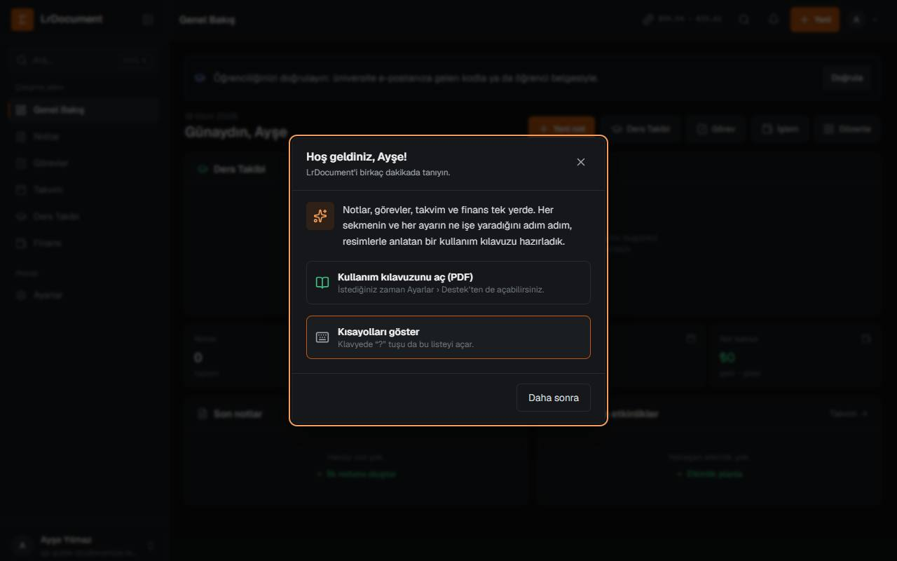
İlk girişte açılan hoş geldin penceresi
3 Ekranı tanıyalım
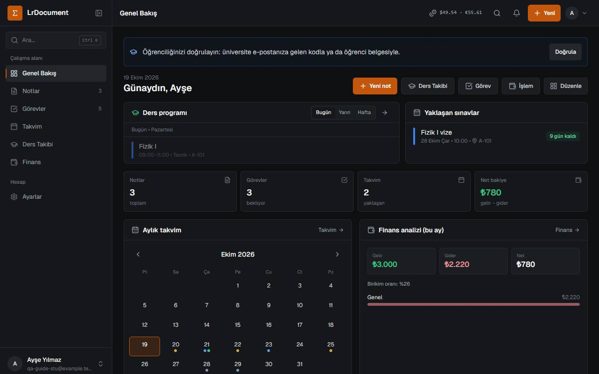
Ana ekran: solda menü, üstte araç çubuğu, ortada seçtiğin bölüm
Sol menü
Uygulamanın bölümleri buradadır: Genel Bakış, Notlar, Görevler, Takvim, Ders Takibi (öğrenciler), Finans, en altta da Ayarlar. Bir bölüme geçmek için adına dokunman yeterli. Menünün üstündeki küçük düğmeyle menüyü daraltıp ekranı genişletebilirsin.
Üst çubuk (soldan sağa)
Bölümün adı: Şu an nerede olduğunu gösterir.
Döviz kuru ($ ve €): Güncel dolar ve euro kurunu gösterir. Dokunursan ayrıntıları açılır.
Büyüteç: Arama. Her yerde arama yapar (Bölüm 16).
Zil: Bildirimlerin. Geciken işler ve hatırlatmalar burada (Bölüm 17).
+ Yeni: Hızlıca yeni not, görev, etkinlik ya da işlem ekler.
Profil harfi: Hesabın, ayarlar, hesap değiştirme ve çıkış.
Telefonda
Telefonda sol menü gizlidir. Sol üstteki üç çizgi düğmesine bas ya da ekranın sol kenarından sağa doğru kaydır; menü açılır. Kapatmak için menüyü sola kaydır.
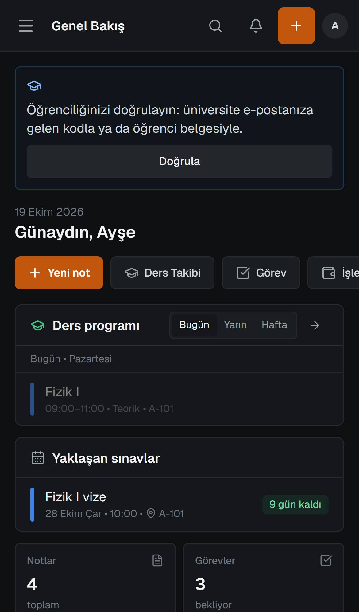
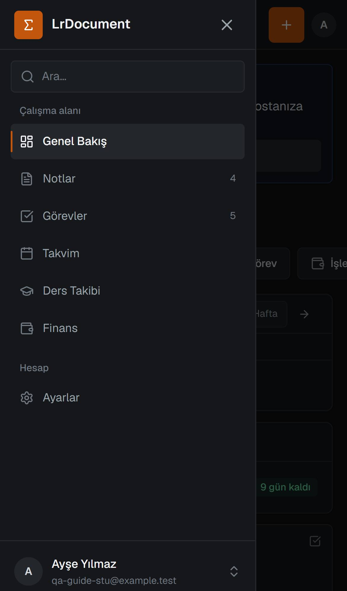
Telefonda Genel Bakış ve açılan menü
4 Genel Bakış ve bölümler (widget)
Genel Bakış, gününün özetidir. Bugün ne var, ne yaklaşıyor, ne kadar para harcadın? Hepsini tek ekranda görürsün.
Buzdolabının kapağını düşün. Üstüne en önemli notları, takvimi ve listeleri yapıştırırsın. Genel Bakış da senin buzdolabı kapağındır. Hangi kâğıdın nerede duracağını sen seçersin.
Hangi bölümler var?
Bölüm
Ne gösterir?
Ders Takibi
Bugünkü dersler ve yaklaşan sınavlar (öğrenciler)
Özet kartları
Not, görev, takvim sayıları ve net bakiye
Son notlar
En son değiştirdiğin notlar
Yaklaşan etkinlikler
Takvimdeki sıradaki etkinlikler
Yaklaşan görevler
Son günü yaklaşan ya da geçen görevler
Yaklaşan ödemeler
30 gün içindeki ödeme ve tahsilatlar
Aylık takvim
Ayın küçük bir takvimi. Renkli noktalar o günde bir şey olduğunu gösterir.
Finans analizi
Bu ayın geliri, gideri, birikim oranı ve en çok harcadığın kategoriler
Döviz kurları
Dolar ve euro kuru, ayrıca hızlı çevirici: “100 dolar kaç TL?”
Akademik durum
Not ortalaman, devamsızlık uyarıları ve sıradaki sınav (öğrenciler)
Sabitlenmiş notlar
İğneyle sabitlediğin notlara tek dokunuşla ulaşırsın
Bölümleri düzenlemek
Genel Bakış’ta sağ üstteki Düzenle düğmesine bas.
Bir bölümün yanındaki göz simgesine basarak onu göster ya da gizle.
Yukarı ve aşağı oklarıyla bölümlerin sırasını değiştir.
Tamam’a bas. Bu düzen hesabına kaydedilir; telefonunda da aynı görünür.
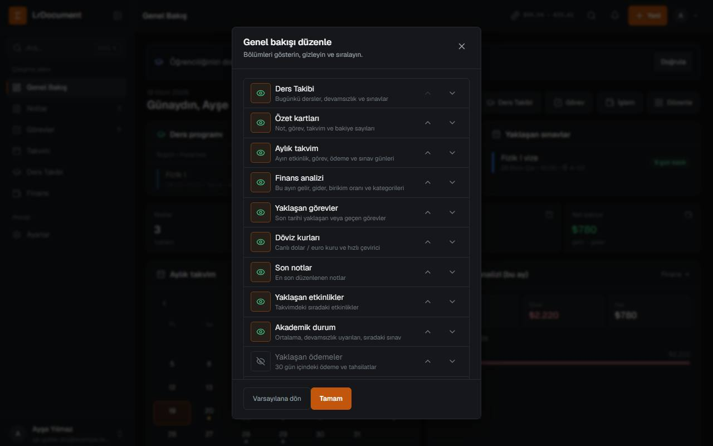
“Genel bakışı düzenle” penceresi
Her şeyi karıştırdıysan Varsayılana dön’e bas. İlk düzen geri gelir.
5 Notlar
Notlar, dijital defterindir. İstediğin kadar not yazabilir, klasörlere koyabilir, formül ekleyebilirsin.
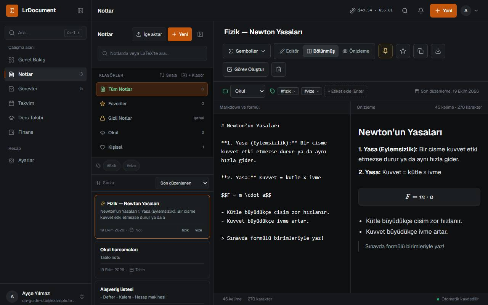
Solda klasörler ve not listesi, sağda yazma alanı ve önizleme
Yeni not açmak
Notlar sayfasında Yeni’ye bas.
Açılan küçük menüden Not’u seç. Hesap tablosu istiyorsan Tablo’yu seç (Bölüm 6).
Üstteki başlık alanına notunun adını yaz.
Aşağıdaki büyük alana notunu yaz. Her şey kendiliğinden kaydedilir; “Kaydet” düğmesi aramana gerek yok.
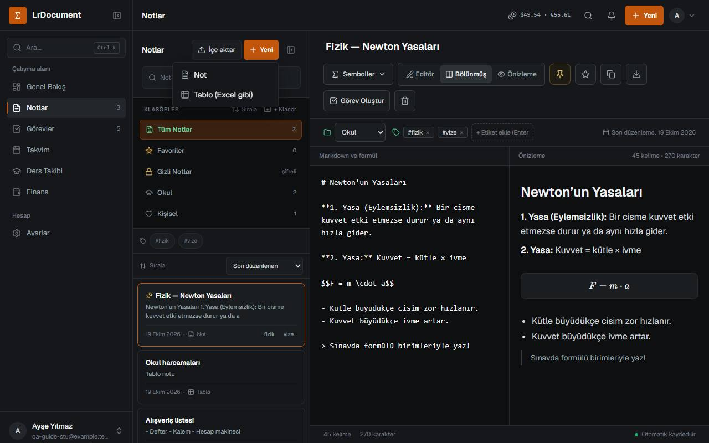
Yeni: Not ya da Tablo
Yazıyı süslemek
Yazdığın
Görünen
# Başlık
Büyük başlık
**kalın** veya Ctrl+B
kalın
*eğik* veya Ctrl+I
eğik
- madde
• madde
1. madde
Numaralı liste
> alıntı
Kenarı çizgili alıntı
$a^2+b^2=c^2$
Satır içinde formül
$$\frac{1}{2}$$
Ortada büyük formül
Formüller ve semboller
Matematik, fizik ya da kimya formülü yazmak için Semboller düğmesine bas. Bir çekmece açılır. İçinde kesir, kök, integral, Yunan harfleri gibi semboller vardır. Birine dokunduğunda yazdığın yere eklenir.
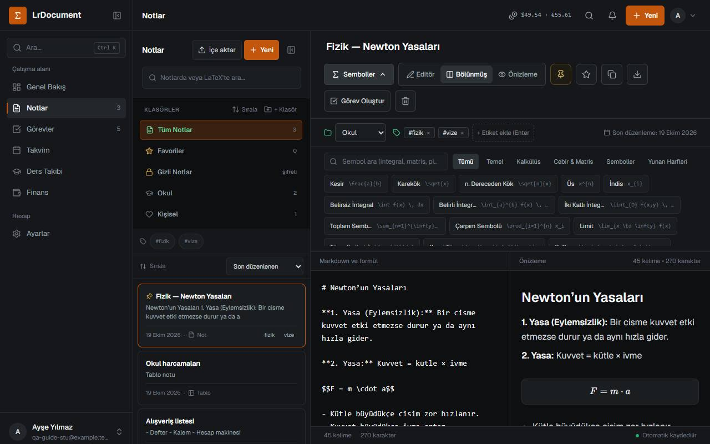
Sembol çekmecesi açıkken
Yazım araçları: roman ve tez yazanlar için
Bir kitap ya da tez yazıyorsan, Yazım düğmesi senin yardımcın olur. Bölüm numaralarını, dipnotları ve kaynakları senin yerine sayar.
Yazım düğmesine bas. Bir şerit açılır. İki sekmesi vardır:
Roman: Yeni bölüm (“Bölüm 3” gibi, numara kendiliğinden artar), sahne ayracı (* * *), diyalog çizgisi (—), iç ses, tırnak, karakter kartı, yazar notu ve hazır roman iskeleti.
Tez / Akademik: Numaralı bölüm (1. Giriş) ve alt başlık (1.1), dipnot, atıf (Soyad, Yıl), kaynaklı alıntı, kitap ve makale künyesi (APA), numaralı şekil, tablo ve denklem, İçindekiler (başlıklarından kendiliğinden yapılır) ve hazır tez iskeleti.
Kısayol
Ne yapar?
Ctrl + Shift + B
Yeni bölüm
Ctrl + Shift + D
Diyalog çizgisi (—)
Ctrl + Shift + H
Sahne ayracı (* * *)
Ctrl + Shift + F
Dipnot: imlece küçük bir numara koyar, açıklamasını notun sonuna ekler
Ctrl + Shift + Q
Kaynaklı alıntı
Notun altında kelime sayısının yanında yaklaşık sayfa sayısını ve okuma süresini de görürsün.
Görünüm düğmeleri
Editör: Sadece yazma alanı.
Bölünmüş: Solda yazarsın, sağda nasıl göründüğünü anında görürsün (bilgisayarda).
Önizleme: Sadece bitmiş hâli. Formüller güzelce çizilir.
Kitap (Önizleme’de, tablet ve bilgisayarda): Yazın, açık bir kitap gibi iki sayfa yan yana görünür. Sayfaları oklarla ya da klavyedeki ←→ tuşlarıyla çevirirsin.
Klasörler
Klasörler, çekmecelerin gibidir. Okul notlarını bir çekmeceye, kişisel notlarını başka bir çekmeceye koyarsın.
Klasörler başlığının yanındaki + Klasör’e bas.
Klasöre bir ad ver. İstersen kısa bir açıklama ekle.
Klasörün simgesini seç: kitap, okul şapkası, kalp, para, uçak… 20 simge var.
Oluştur’a bas.
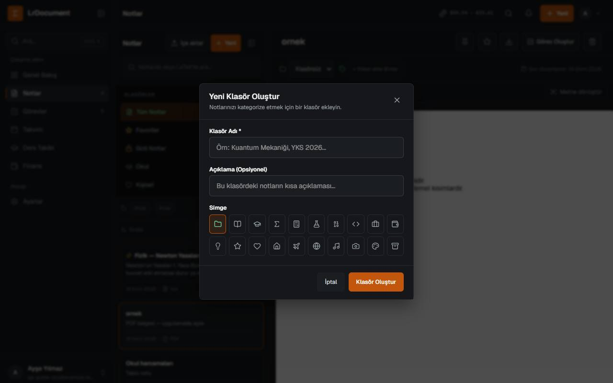
Klasör oluştururken simge seçimi
Klasörü düzenlemek (ad, açıklama, simge): Klasörün üzerine gelince çıkan kalem simgesine bas. Telefonda kalem simgesi hep görünür.
Hangi klasörde açılsın? Notlar normalde Tüm Notlar’da açılır. Ayarlar › Tercihler › Notlar’dan “Son bıraktığım klasör” ya da istediğin bir klasörü seçebilirsin.
Notları sıralamak
Not listesinin üstündeki Sırala kutusundan seç: son düzenlenen, oluşturma tarihi, başlık (A–Z) ya da Elle. Elle seçersen her notun yanında oklar çıkar; istediğin sıraya dizebilirsin. İğneyle sabitlenen notlar hep en üstte durur.
Etiketler, iğne ve yıldız
Etiket: Notun altındaki “+ Etiket ekle” kutusuna bir kelime yazıp Enter’a bas (ör. vize). Sonra etikete dokunarak sadece o etiketli notları görürsün.
İğne: Notu listenin en üstüne sabitler. Genel Bakış’taki “Sabitlenmiş notlar” bölümünde de görünür.
Yıldız: Notu Favoriler’e ekler.
Görev Oluştur: Bu not için yapılacak bir görev açar.
6 Tablo notları (Excel gibi)
Tablo notu, kutucuklardan oluşan bir hesap tablosudur. Alışveriş listesi, harcama hesabı, not ortalaması… Hepsini burada kolayca hesaplarsın.
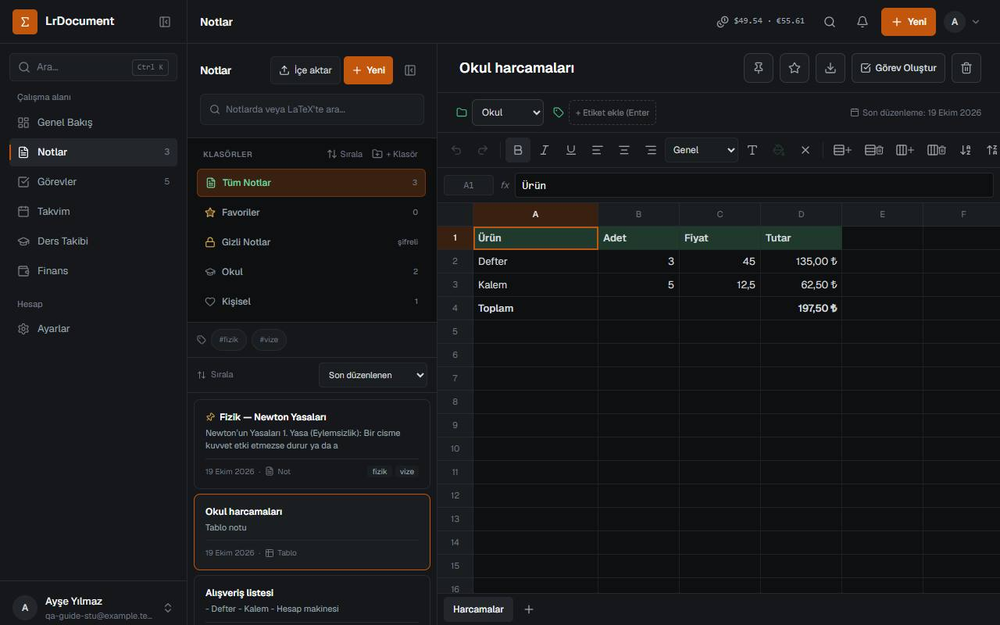
Bir tablo notu: üstte araç çubuğu ve formül satırı, altta sayfa sekmeleri
Temel kullanım
Yeni › Tablo ile yeni bir tablo aç.
Bir kutucuğa (hücreye) dokun ve yazmaya başla. Enter aşağı, Tab sağa geçer.
Hücreyi düzeltmek için çift tıkla ya da F2’ye bas. İstersen üstteki fx satırına da yazabilirsin.
Hücreleri seçmek için fareyle sürükle ya da Shift + ok tuşlarını kullan. Silmek için Delete’e bas.
Formüller: hesabı tablo yapsın
Hesap makinesine her seferinde sayıları tek tek yazmak yerine tabloya “bu iki kutuyu topla” dersin. Sayılar değişince sonuç da kendiliğinden değişir.
Formüller = işaretiyle başlar. Hücreler adlarıyla anılır: A1, A sütunu 1. satırdır.
Formül
Ne yapar?
=A1+A2
İki hücreyi toplar (-*/^ de olur)
=TOPLA(A1:A10) / =SUM(…)
A1’den A10’a kadar toplar
=ORTALAMA(B2:B9)
Ortalama
=MİN(…), =MAK(…)
En küçük, en büyük
=EĞER(C2>=50;"Geçti";"Kaldı")
Koşula göre yazı
=ETOPLA(A2:A20;">100")
Koşula uyanları toplar
=EĞERSAY(A2:A20;"elma")
Koşula uyanları sayar
=DÜŞEYARA(…)
Tabloda arama yapar
=YUVARLA(A1;2)
2 basamağa yuvarlar
=BUGÜN()
Bugünün tarihi
=Sayfa2!B3
Başka bir sayfadaki hücre
Formülleri ezberlemene gerek yok. Araç çubuğundaki Σ düğmesine bas ve listeden seç. Önce birkaç hücre seçersen formül, seçtiğin hücreleri kendisi kullanır.
Araç çubuğu
Geri al / Yinele: Yanlışlıkla yaptığını geri alır (Ctrl+Z / Ctrl+Y).
K, İ, A: Kalın, italik, altı çizili yazı.
Hizalama: Yazıyı sola, ortaya ya da sağa yaslar.
Sayı biçimi: Genel, sayı (0,00), tam sayı, para (₺), yüzde (%), tarih, metin.
Yazı rengi ve dolgu rengi; yanındaki X renkleri temizler.
Satır / sütun ekle-sil: Formüller bozulmadan kendini ayarlar.
A→Z / Z→A: Seçili sütuna göre sıralar. İlk satır başlık olarak yerinde kalır.
Σ: Formül ekler.
Daha fazlası
Sayfalar: Alttaki + ile yeni sayfa eklenir. Adını değiştirmek için sayfa adına çift tıkla.
Kopyala-yapıştır: Excel’den ya da Google E-Tablolar’dan kopyalayıp doğrudan yapıştırabilirsin.
Aşağı doldur: Seçili alanda Ctrl+D ilk satırı aşağı kopyalar.
Sütun genişliği: Sütun harfinin sağ kenarını sürükle.
Birden fazla sayı seçtiğinde alt çubukta toplam, ortalama ve sayı görünür.
7 Dosya içe aktarma
Bilgisayarındaki ya da telefonundaki dosyaları LrDocument’e getirebilirsin.
Notlar sayfasında İçe aktar’a bas.
Önce ne tür bir not istediğini seç:
Not: PDF, Word (.docx), Markdown (.md) ya da metin (.txt).
Tablo: Excel (.xlsx, .xls), LibreOffice (.ods) ya da CSV.
… dosyası seç’e bas. Dosya seçme penceresinde yalnızca o türün dosyaları seçilebilir.
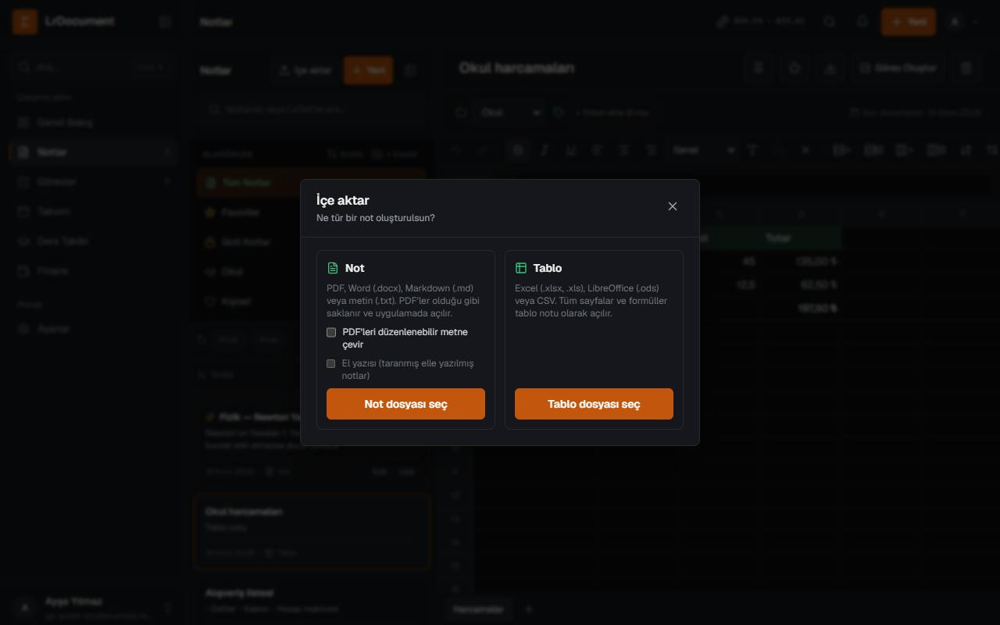
İçe aktar: önce tür seçilir
Word, Markdown ve metin dosyaları düzenlenebilir bir not olur.
Excel ve CSV dosyaları tablo notu olur. Tüm sayfalar ve formüller gelir.
PDF dosyaları olduğu gibi saklanır ve uygulamanın içinde açılır (Bölüm 8). PDF’i düzenlenebilir yazıya çevirmek istersen “PDF’leri düzenlenebilir metne çevir” kutusunu işaretle.
Tablo seçeneğinde Excel dosyası yüklersen tablo notu açılır. Not seçeneğinde yanlışlıkla Excel dosyası seçsen bile uygulama bunu anlar ve yine tablo açar.
8 PDF notları ve el yazısı
PDF yüklediğinde dosya bozulmaz, değiştirilmez. Uygulamanın içindeki PDF okuyucuyla açılır.
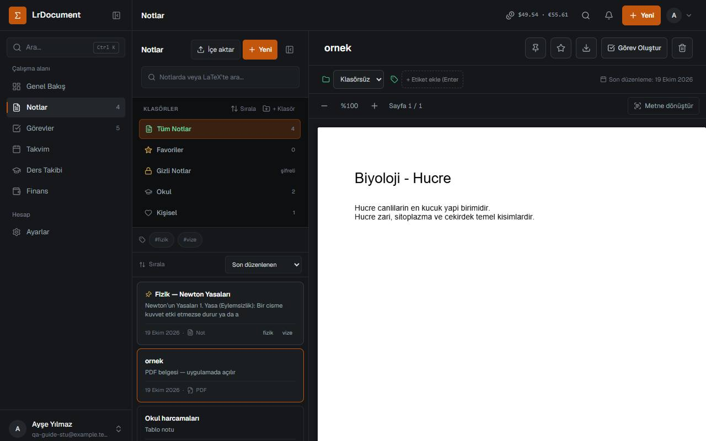
Uygulamanın içindeki PDF okuyucu
PDF bilgisayarda %50, telefonda %75 büyüklükte açılır. − / + düğmeleriyle %10’a kadar küçültüp büyütebilirsin. En son bıraktığın büyüklük hatırlanır; bir dahaki sefere PDF o büyüklükte açılır (telefon ve bilgisayar için ayrı ayrı). Yüzdeye basınca sayfa genişliğine (%100) döner.
Aşağı kaydırdıkça sayfalar yüklenir. Üstte “Sayfa 3 / 12” gibi nerede olduğunu görürsün. ‹ › okları bir sayfa ileri ya da geri götürür.
Kitap görünümü (tablet ve bilgisayarda): Kitap düğmesine bas. Sayfalar açık bir kitap gibi ikişer ikişer yan yana dizilir; kapak tek başına sağda durur. Telefonda ekran dar olduğu için sayfalar tek tek gösterilir.
İndir düğmesi PDF’in kendisini indirir.
Metne dönüştür (el yazısı dahil)
PDF notunda Metne dönüştür’e bas.
Basılı yazı ya da El yazısı’nı seç.
Uygulama sayfaları okur ve yazıyı yeni bir metin notuna koyar. PDF olduğu gibi kalır.
El yazısı tanıma, okunaklı ve düz satırlara yazılmış notlarda en iyi sonucu verir. Bilgisayar her kelimeyi doğru okuyamayabilir; çıkan metni mutlaka kontrol et.
Okuma işlemi senin cihazında yapılır; PDF’in içeriği bunun için başka bir yere gönderilmez. PDF’in kendisi ise sunucuda sana özel anahtarla şifrelenmiş olarak saklanır ve her açılışta bozulmadığı kontrol edilir.
9 Gizli Notlar
Gizli Notlar, kilitli bir günlük gibidir. Anahtarı sadece sende olur.
Bir sandığa kilit taktığını düşün. Anahtarı yalnızca sen biliyorsun. Sandığı başkası alsa bile içini açamaz. LrDocument’in yöneticisi bile açamaz!
Notlar’da klasör listesinden Gizli Notlar’a bas.
İlk seferde bir gizli notlar şifresi belirle. Hesap şifrenden farklı olsun.
Yeni gizli not ile yazmaya başla. Notlar cihazında şifrelenip öyle kaydedilir.
İşin bitince Kilitle’ye bas.
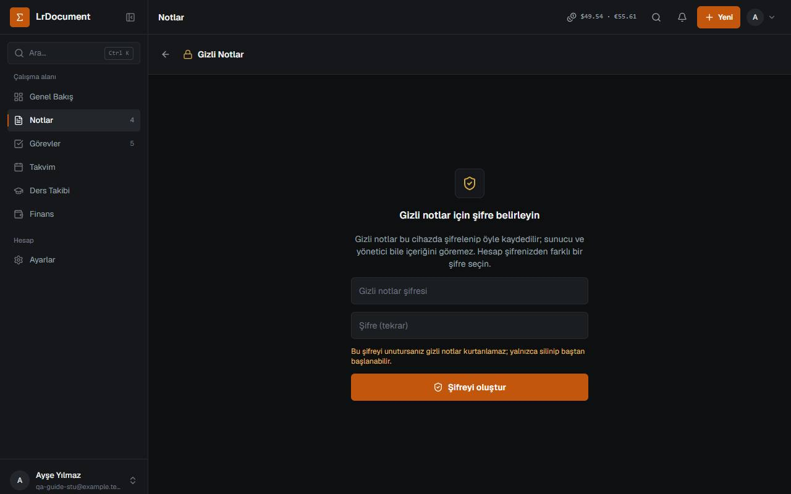
Gizli Notlar: ilk açılışta şifre belirlenir
Gizli notlar kendiliğinden kilitlenir: sayfadan çıkınca, 5 dakika hiçbir şeye dokunmayınca ya da uygulama 1 dakikadan uzun arka planda kalınca.
Şifreyi değiştirmek için içerideyken Şifre düğmesine bas.
Kurumsal hesaplarda Gizli Notlar, kurum sahibinin Şahsi Notlar sayfasındadır.
Gizli notlar şifreni unutursan notlar kurtarılamaz. Şifre hiçbir yerde saklanmaz. “Şifremi unuttum” seçeneği tüm gizli notları siler ve baştan başlamana izin verir.
Markdown (.md) · PDF (.pdf) formüllerle birlikte · Word (.docx)
Tablo notu
Excel (.xlsx) tüm sayfalar ve formüller · CSV · PDF
PDF notu
PDF’in kendisi
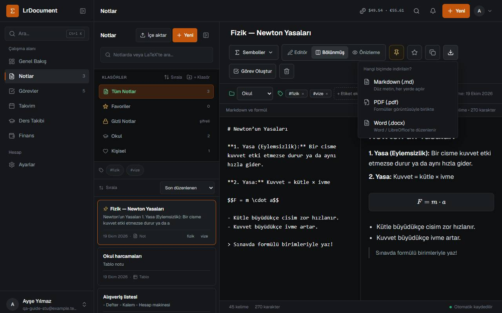
“Hangi biçimde indirilsin?” menüsü
11 Görevler ve Pano
Görevler, yapılacaklar listendir. Bitirdiğin işi işaretlemek çok keyiflidir!
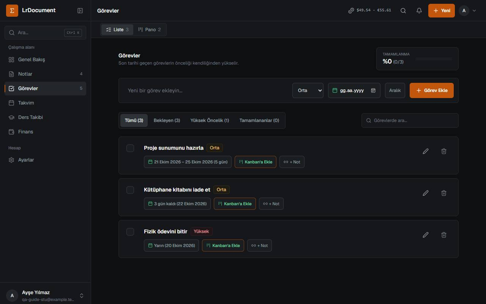
Görevler: liste görünümü
Liste
Üstteki “Yeni bir görev ekleyin…” kutusuna görevi yaz.
Önceliğini seç: Yüksek, Orta, Düşük.
Son tarihini seç. Görev birkaç gün sürecekse Aralık’ı açıp başlangıç ve bitiş günlerini seç.
İstersen saat de seç (saat simgesinin yanındaki kutu). Sadece saat seçersen görev bugüne yazılır. O saat gelince telefonuna “Görevin saati geldi” bildirimi gelir.
Enter’a bas ya da Ekle’ye dokun.
İş bitince görevin yanındaki kutucuğa dokun. ✔
Üstteki filtrelerle sadece bugünkü, yüksek öncelikli ya da bekleyen görevleri görebilirsin. Son günü (ya da saati) geçen görevler kırmızı görünür ve zilde de uyarı çıkar.
Bir şeyi silmek istediğinde (görev, not, işlem, kart…) uygulama önce “Silinsin mi?” diye sorar. Yanlışlıkla dokunduysan Vazgeç’e bas.
Pano (Kanban)
Panoyu, üzerinde sütunlar olan bir mantar pano gibi düşün: Fikir → Yapılacak → Devam ediyor → İnceleme → Tamamlandı. Kartları soldan sağa ilerletirsin.
Üstteki Pano sekmesine geç. Kart Ekle ile kart oluştur. Kartı başka bir sütuna sürükleyerek durumunu değiştir. Karta dokunursan ayrıntılarını düzenleyebilirsin.
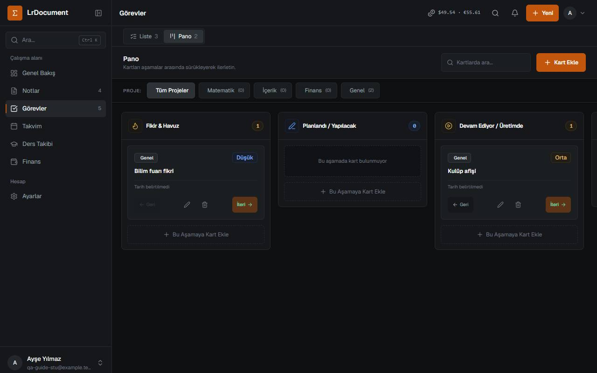
Pano görünümü
12 Takvim
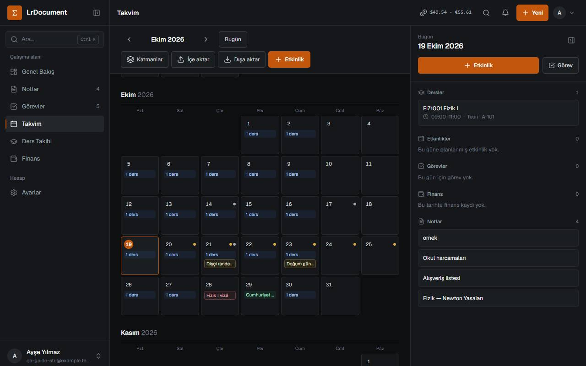
Aylık takvim ve gün paneli
Etkinlik ekle: Etkinlik düğmesine bas. Ad, tarih, saat ve türü yaz. İstersen yapılacaklar listesi (kontrol listesi) ekle.
Bir güne bak: Güne dokun. Sağdaki gün panelinde o günün her şeyi listelenir.
Ay değiştir: Oklara bas. Telefonda takvimi sağa ya da sola kaydır. Bugün düğmesi bugüne döndürür.
Katmanlar: Takvimde görevlerin, ödeme günlerin, derslerin, sınavların, okul takviminin ve resmi tatillerin de görünür. Katmanlar düğmesinden istemediklerini gizleyebilirsin.
Dışa aktar / eşitle: Etkinliklerini .ics dosyası olarak indirip Google Takvim ya da Outlook’a aktarabilirsin. Başka bir takvimden .ics dosyasını da içeri alabilirsin.
13 Finans
Finans, dijital cüzdanındır. Paranın nereden gelip nereye gittiğini görürsün.
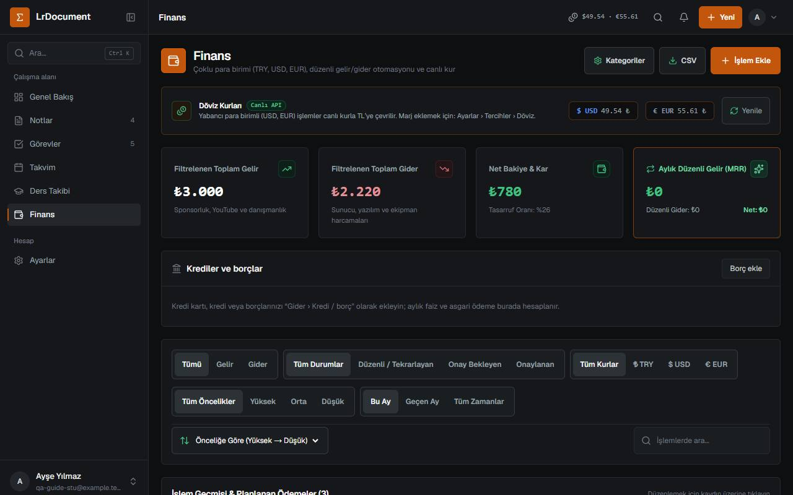
Finans sayfası
İşlem eklemek
İşlem Ekle’ye bas.
Gelir mi (gelen para) Gider mi (giden para) seç.
Başlığı ve tutarı yaz. Para birimini seç: TL, dolar ya da euro. Dolar ve euro güncel kurla TL’ye çevrilir.
Kategoriyi ve tarihi seç.
Para gerçekten geldiyse ya da ödendiyse Onayla anahtarını aç. Daha gelmediyse kapalı bırak; tarihi geçince zil seni uyarır.
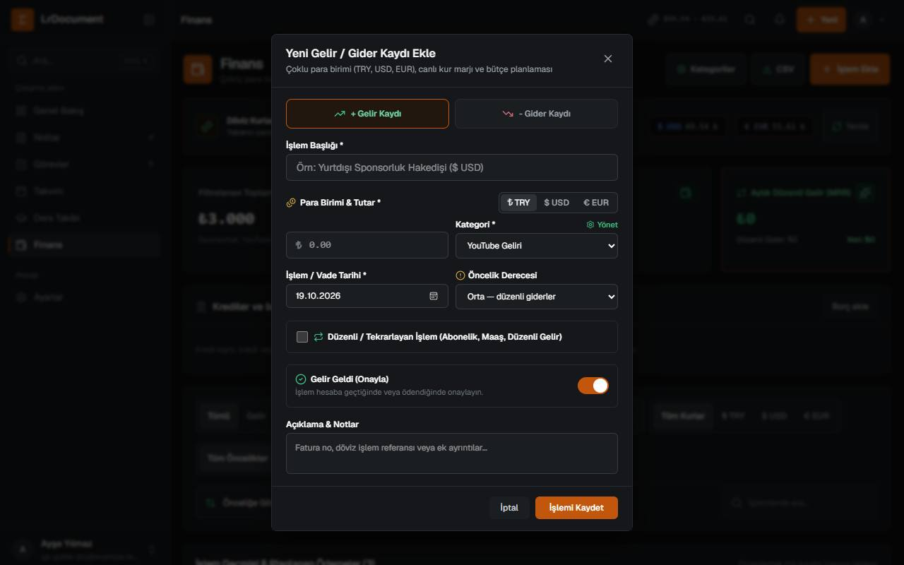
Yeni gelir / gider kaydı
Tekrarlayan işlem: Kira, maaş, abonelik gibi düzenli işler için “Düzenli / Tekrarlayan” kutusunu işaretle ve sıklığı seç: günlük, haftalık, aylık ya da yıllık (ör. yıllık sigorta, alan adı). Bitiş tarihi isteğe bağlıdır; boş bırakırsan süresiz tekrarlar. Düzenli bir işlemi hangi ayda açarsan aç, düzenlediğin ya da sildiğin şey asıl kayıttır.
Kredi / borç: “Krediler ve borçlar” kutusundaki Kredi / borç ekle’ye bas (ya da gider eklerken “Kredi / borç”u seç). Kalan borcu, faizi ve asgari ödemeyi uygulama hesaplar. “Asgariyi öde” ile ödemeni tek dokunuşla kaydedersin.
Kategoriler: Kendi kategorilerini (Market, Ulaşım…) oluşturabilirsin.
CSV: Kayıtlarını Excel’de açılacak bir dosya olarak indirir.
14 Ders Takibi Öğrenciler
Ders Takibi, okul hayatının kontrol panelidir: ders programı, sınavlar, devamsızlık ve notlar.
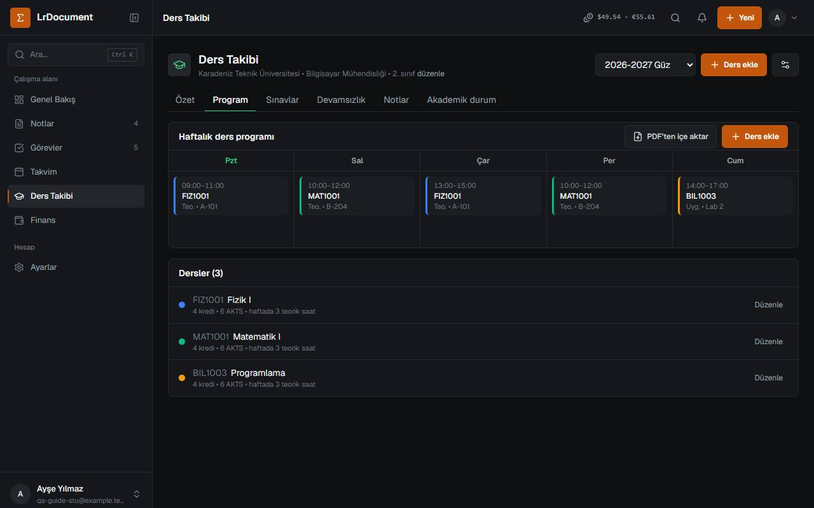
Ders Takibi › Program
Sekme
Ne işe yarar?
Özet
Bugünkü dersler, yaklaşan sınavlar ve kısa uyarılar.
Program
Haftalık ders programın. Ders ekle ile dersleri gir. Okulunun ders programı PDF’ini PDF’ten içe aktar ile otomatik doldurabilirsin.
Çalışma takvimi
Her ders için haftalık ders çalışma saatlerini seçersin. Aşağıda ayrıca anlatılıyor.
Sınavlar
Sınav tarihlerini gir. Kaç gün kaldığını görürsün; sınav günü sabah bildirim gelir.
Devamsızlık
Gitmediğin dersleri işaretle. Sınıra yaklaşınca sarı, aşınca kırmızı uyarı çıkar.
Notlar
Vize, final, ödev notlarını gir. Harf notunu ve ortalamanı hesaplar. Hocan çan eğrisi uyguluyorsa onu da hesaplar.
Akademik durum
Dönem ve genel not ortalaman. Hedef ortalamana ulaşmak için ne kadar not alman gerektiğini söyler.
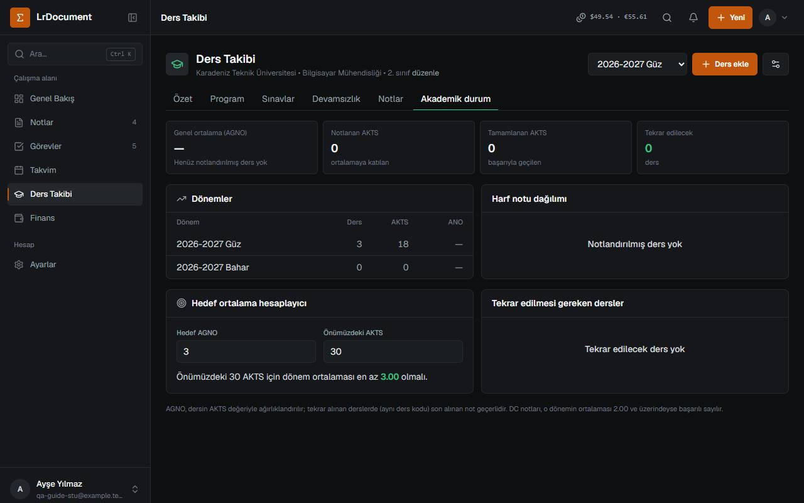
Akademik durum
Ayarlar › Öğrenci bilgileri’nden üniversiteni seçtiysen ve okulunun akademik takvimi yayımlandıysa dönemin başlangıç-bitiş tarihleri, sınav haftaları ve tatiller kendiliğinden gelir. Sen sadece ders programını girersin.
Ders çalışma takvimi
Ders programı “okulda ne zaman dersin var” der. Çalışma takvimi ise “evde ne zaman ders çalışacaksın” der. İkisi de her hafta aynı gün ve saatte tekrarlar.
Ders Takibi › Çalışma takvimi sekmesine gir. Bu dönemin dersleri ders programından kendiliğinden gelir.
Bir dersin altındaki Çalışma saati ekle’ye bas. Günü, başlangıç ve bitiş saatini seç (ör. Salı 19:00–20:30). Ekle’ye bas.
Çalışma saati gelince telefonuna “Ders çalışma vakti” bildirimi gelir. Bitince “Ders çalışması bitti” bildirimi gelir.
Çalışma bitince Çalıştım, Kısmen (kaç dakika çalıştığını yazarsın) ya da Çalışmadım’a bas.
İşaretlemediğin çalışma “yapılmadı” sayılır. Bir dersin çalışma saatlerinin %40’ından fazlasını yapmazsan, devamsızlıkta olduğu gibi kırmızı bir uyarı çıkar: “… 3 saat eksik — ileriki çalışmalara eklenmeli.” Eksik saatleri başka bir gün çalıştıysan Telafi ekle ile yaz; eksik süreden düşülür.
Her dönemin çalışma takvimi ayrıdır: üstteki dönem kutusundan dönem değiştirince o dönemin takvimi görünür. Bildirimleri sekmedeki Bildirimler açık düğmesinden kapatabilirsin.
Ders saatin yaklaşınca telefonuna bildirim gelir. Kaç dakika önce geleceğini Ayarlar › Tercihler › Bildirimler › Ders hatırlatması’ndan seçebilirsin.
15 Kurumsal hesaplar Kurumsal
Kurumsal hesap, ekibin ortak çalışma odasıdır. Herkes aynı notları, görevleri ve müşterileri görür. Ama herkesin bir de kendine ait şahsi çekmecesi vardır.
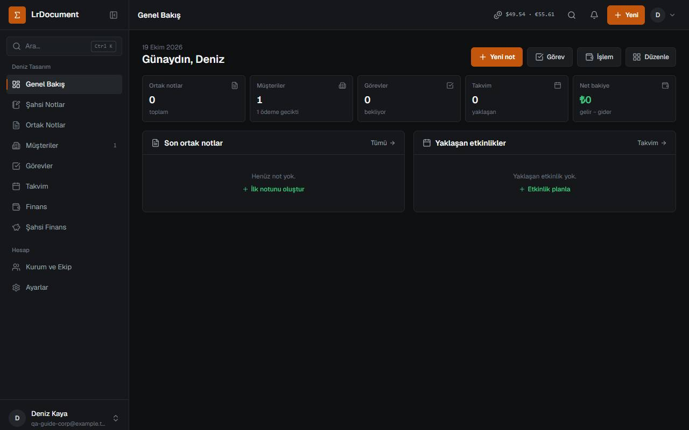
Kurum ve Ekip
Kurum ve Ekip (sahip ve yöneticiler)
Kişi ekle: Yeni üyenin adını yaz. Ona özel bir kurumsal kod oluşur. Üye giriş ekranında “Kurumsal kod ile giriş”e bu kodu yazarak girer.
İzinler: Her üye için her bölümde Yok / Görüntüle / Düzenle seçebilirsin. Örneğin bir üye finansı hiç görmesin, notları sadece okusun.
Yönetici: Yöneticiler her şeyi düzenler ve üyelerin izinlerini ayarlar.
Yeni kod: Kodunu kaybeden üyeye yeni kod verirsin; eskisi çalışmaz olur.
Müşteriler
Müşterilerini, aylık ücretlerini ve ödemelerini takip edersin. Ödemesi geciken müşteri kırmızı görünür.
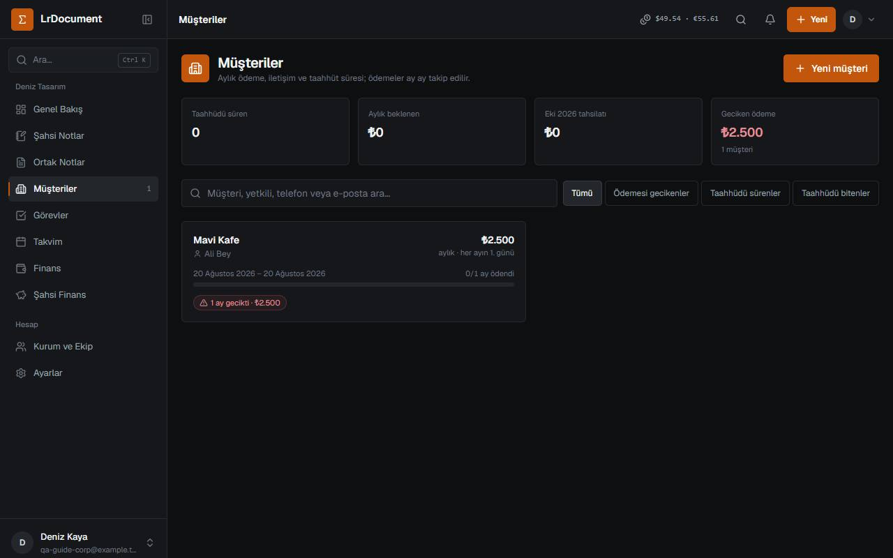
Müşteriler
Şahsi Notlar ve Şahsi Finans
Ofiste herkesin kullandığı büyük bir masa var: bu, Ortak Notlar ve Finans. Bir de herkesin kendi kilitli çekmecesi var: bu da Şahsi Notlar ve Şahsi Finans.
Sol menüde Şahsi Notlar, Ortak Notlar’ın üstündedir; Şahsi Finans ise Finans’ın altındadır.
Buraya yazdıklarını sadece sen görürsün. Kurum sahibi ve diğer üyeler göremez.
Sayfalar ortak sayfalarla aynı şekilde çalışır: klasörler, tablolar, PDF’ler, tekrarlayan ödemeler…
Şahsi ödemelerinin hatırlatmaları sadece senin cihazına gelir.
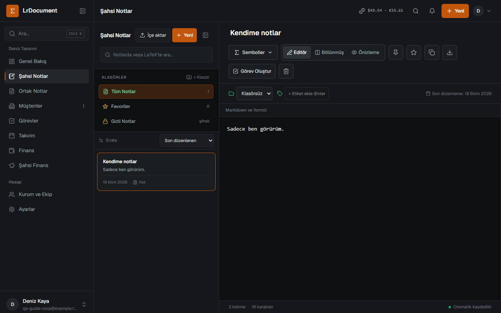
Şahsi Notlar
Ekipten biri bir şey eklediğinde ekranında anında görünür. Kimin eklediği de yazar (“Ekleyen: Mert”).
16 Arama
Üstteki büyüteçe bas ya da klavyede Ctrl+K (Mac’te ⌘+K) ya da / tuşuna bas. Bir kelime yaz; notlar, görevler, etkinlikler ve sayfalar arasında hemen bulur. Sonuca dokunursan oraya gidersin.
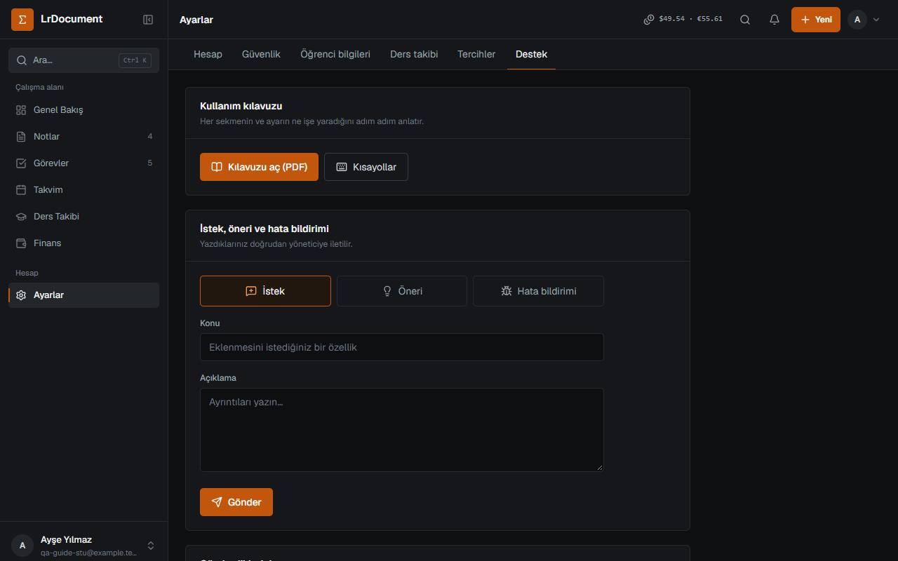
Arama penceresi
17 Bildirimler
Zil
Üstteki zil, uygulama açıkken bildirimlerini gösterir: süresi geçen görevler, onay bekleyen ödemeler, bugünkü ve yarınki etkinlikler. Kurumsalda ekip arkadaşlarının eklediği kayıtlar da buraya düşer.
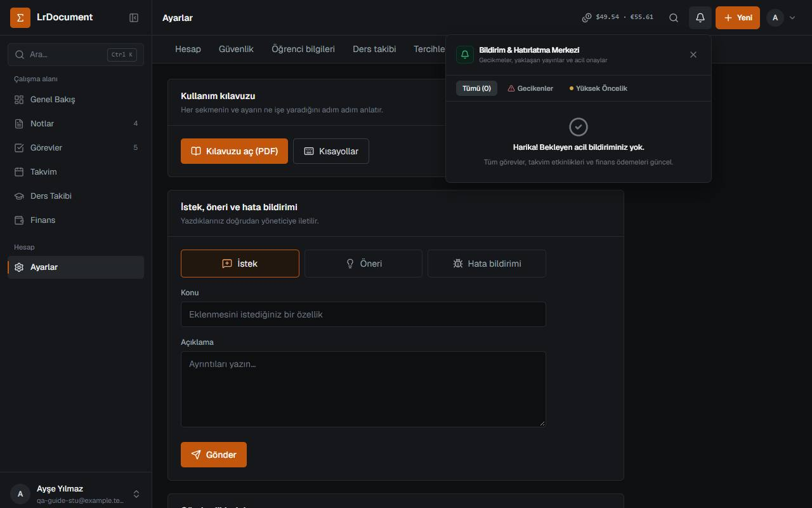
Bildirim merkezi
Telefon ve bilgisayar bildirimleri
Uygulama kapalıyken bile telefonuna, tabletine ya da bilgisayarına bildirim gelebilir:
Görevin son günü geldiğinde ve süresi geçtiğinde.
Ödeme günü geldiğinde ve geçtiğinde (tekrarlayan ve kredi ödemeleri dahil).
Günün etkinlikleri.
Öğrencilerde ders saati (dersten kaç dakika önce olacağını sen seçersin) ve sınav günü.
Kurumsalda ekibin eklediği görev, ödeme ve notlar.
Ayarlar › Tercihler › Bildirimler bölümüne git.
Telefon ve bilgisayar bildirimleri’ni aç. Tarayıcı izin isterse İzin ver’e bas.
Öğrenciysen Ders hatırlatması’ndan zamanı seç: 1 saat, 30, 15, 10, 5 dakika önce, ders başlarken ya da başladıktan sonra.
Bildirim sesi
Ayarlar › Tercihler › Bildirimler’deki Bildirim sesi kutusundan seç: Kapalı, Varsayılan (zil) ya da Kendi sesim. Ses yükle ile bilgisayarından ya da telefonundan bir ses dosyası seçebilirsin (MP3, WAV, OGG veya M4A, en fazla 1 MB). Dene düğmesi sesi çalar; kaydırma çubuğu ses düzeyini ayarlar.
Seçtiğin ses, uygulama açıkken (arka planda bile) gelen bildirimlerde çalar. Uygulama tamamen kapalıyken telefonun ya da bilgisayarın kendi bildirim sesi çalar; tarayıcılar bu sesin değiştirilmesine izin vermez.
iPhone ve iPad’de bildirim için önce uygulamayı ana ekrana eklemelisin (Bölüm 20). Sonra ana ekrandaki simgeden açıp bildirimi aç. Bildirimi her cihazda ayrı açman gerekir.
Hatırlatmalar 08:00–22:00 arasında gelir ve her biri sadece bir kez gönderilir. Ders hatırlatmaları ise ders saatine göre gelir.
18 Kısayollar
Kısayollar işleri hızlandırır. Listeyi görmek için klavyede ? tuşuna bas.
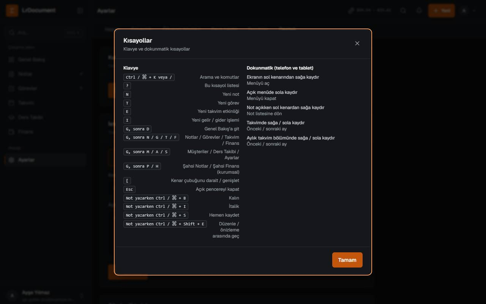
Kısayol listesi
Klavye
Ne yapar?
N
Yeni not
T
Yeni görev
E
Yeni takvim etkinliği
I
Yeni gelir / gider
G sonra D, N, G, T, F…
Genel Bakış, Notlar, Görevler, Takvim, Finans… sayfasına gider
[
Sol menüyü daraltır ya da genişletir
Ctrl+S
Notu hemen kaydeder
Ctrl+Shift+E
Not: düzenleme ve önizleme arasında geçiş
Dokunmatik (telefon / tablet)
Ne yapar?
Ekranın sol kenarından sağa kaydır
Menüyü açar
Açık menüde sola kaydır
Menüyü kapatır
Not açıkken sol kenardan sağa kaydır
Not listesine döner
Takvimde sağa / sola kaydır
Önceki / sonraki ay
Yazı yazarken tek harfli kısayollar çalışmaz; yani yazdığın harfler kaybolmaz. İstemezsen kısayolları Ayarlar › Tercihler › Kısayollar’dan kapatabilirsin.
19 Ayarlar, tek tek
Ayarlar’a sol menünün en altından ya da sağ üstteki profil harfinden ulaşırsın. Üstte sekmeler vardır.
Hesap
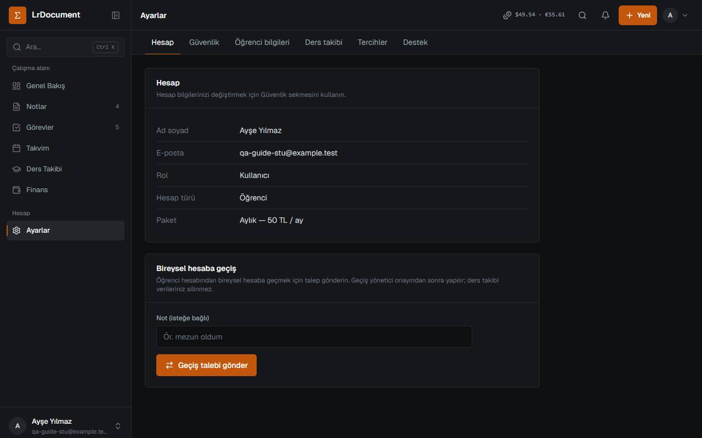
Ayarlar › Hesap
Adın, e-postan, rolün, hesap türün ve paketin (Aylık, Ömür boyu ya da VIP) burada görünür.
Öğrenciler buradan bireysel hesaba geçiş isteyebilir. Yönetici onaylayınca hesabın bireysel olur.
Hesabı sil: Hesabını ve içindeki her şeyi (notlar, dosyalar, görevler, finans…) kalıcı olarak siler. Güvenlik için şifreni ve “HESABIMI SİL” yazısını ister. Bu işlem geri alınamaz; önce notlarını indirmek isteyebilirsin. Kurumsal üyeler bu düğmeyi görmez.
Güvenlik
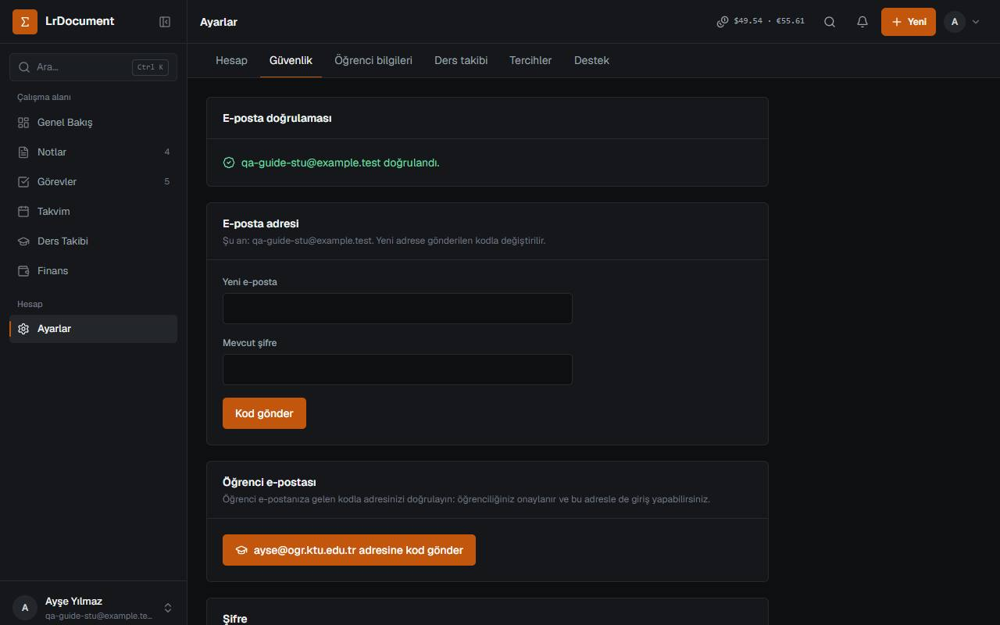
Ayarlar › Güvenlik
E-posta doğrulaması: E-postana gelen kodla adresini doğrularsın.
E-posta adresi: E-postanı değiştirebilirsin. Yeni adrese kod gider.
Öğrenci e-postası (öğrenciler): Okul e-postanı doğrularsan onunla da giriş yapabilirsin. Öğrenciliğin de doğrulanmış olur.
Şifre: Eski şifreni ve yeni şifreni yazarak değiştirirsin.
İki adımlı doğrulama: En güçlü koruma! Açınca girişte şifrenin yanında telefonundaki uygulamanın (Google Authenticator, Microsoft Authenticator…) ürettiği kod da sorulur. Kurtarma kodlarını güvenli bir yere yaz.
Öğrenci bilgileri Öğrenciler
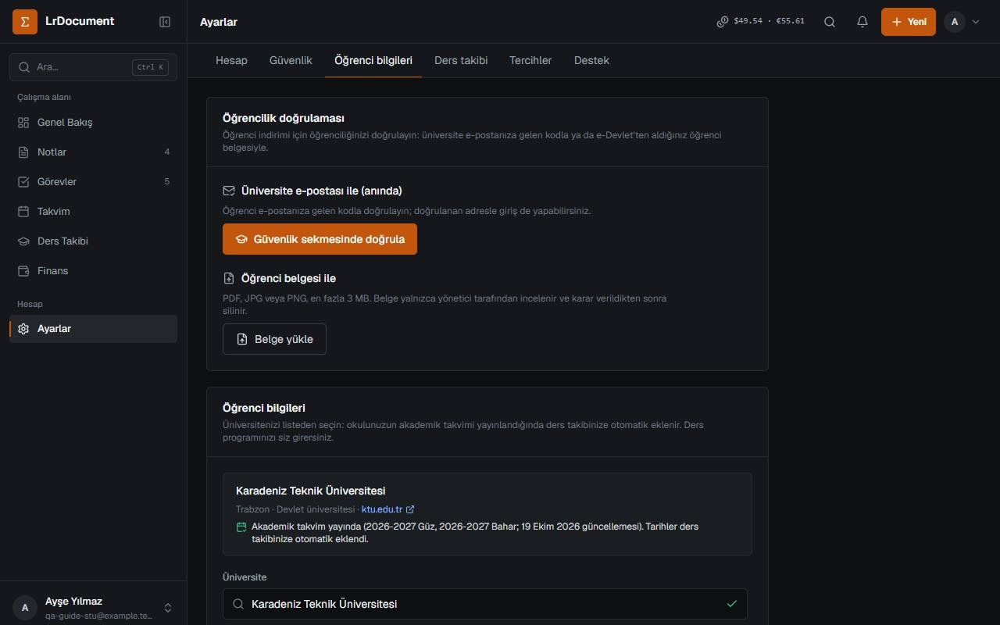
Ayarlar › Öğrenci bilgileri
Üniversiteni listeden seç; bölümünü, sınıfını ve öğrenci numaranı yaz. Öğrencilik doğrulaması için okul e-postana gelen kodu ya da öğrenci belgeni kullanabilirsin.
Ders takibi Öğrenciler
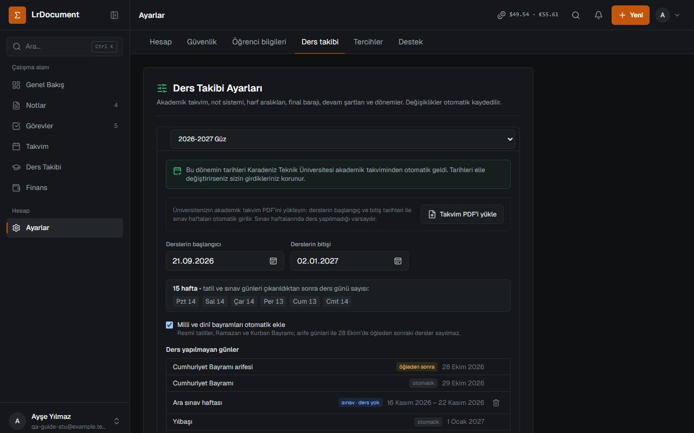
Ayarlar › Ders takibi
Okulunun not sistemi (harf notları, geçme notu, devam zorunluluğu) ve akademik takvim burada ayarlanır. Okulunun takvimi yayımlandıysa kendiliğinden gelir. Gelmediyse takvim PDF’ini yükleyebilirsin.
Tercihler
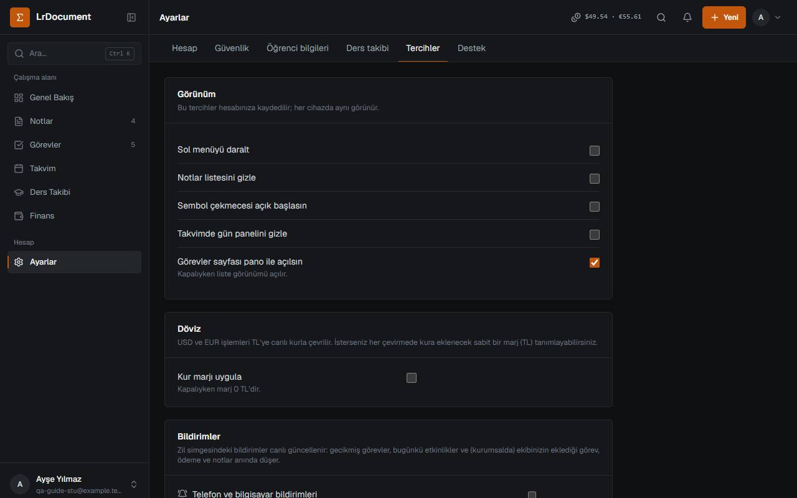
Ayarlar › Tercihler
Görünüm: Sol menü daraltılmış başlasın mı, not listesi gizli mi olsun, sembol çekmecesi açık mı başlasın, takvimde gün paneli görünsün mü, Görevler pano ile mi açılsın?
Notlar: Notlar’ın hangi klasörde açılacağını (Tüm Notlar, son bıraktığın klasör ya da seçtiğin klasör) ve kitap görünümünü seçersin.
Döviz: Dolar ve euro çevirilerine sabit bir marj eklemek istersen buradan açarsın (normalde 0 TL).
Bildirimler: Telefon ve bilgisayar bildirimlerini açıp kapatırsın; bildirim sesini seçer ya da kendi sesini yüklersin; öğrenciler ders hatırlatma zamanını seçer.
Uygulama: LrDocument’i bilgisayarına ya da telefonuna uygulama olarak yüklersin.
Gizlilik: Verilerinin nasıl korunduğunu anlatır.
Destek
Ayarlar › Destek
Kullanım kılavuzu: Bu kılavuzu açar.
İstek, öneri ve hata bildirimi: Uygulamanın gelişmesine sen de yardım edebilirsin! Tür seç (istek, öneri, hata), konuyu ve açıklamayı yaz, Gönder’e bas. Yöneticinin yanıtı aşağıda ve e-postanda görünür.
20 Uygulama olarak yükleme
LrDocument’i bir uygulama gibi yükleyebilirsin. Masaüstünde ya da ana ekranında kendi simgesi olur ve kendi penceresinde açılır.
Cihaz
Nasıl yüklenir?
Windows / Mac (Edge, Chrome)
Adres çubuğundaki “Uygulamayı yükle” simgesine bas ya da Ayarlar › Tercihler › Uygulama › Yükle.
Android (Chrome)
Menü (⋮) › Ana ekrana ekle / Uygulamayı yükle.
iPhone / iPad (Safari)
Paylaş düğmesi (□↑) › Ana Ekrana Ekle › Ekle. Sonra ana ekrandaki LrDocument simgesinden aç.
iPhone ve iPad’de bildirimler sadece ana ekrana eklenmiş uygulamada çalışır (iOS 16.4 ve üstü).
21 Güvenlik ipuçları
Güçlü bir şifre seç: Uzun olsun; harf, rakam ve işaret karışık olsun. Başka sitelerde kullandığın şifreyi kullanma.
İki adımlı doğrulamayı aç: Biri şifreni öğrense bile telefonun olmadan giremez.
Ortak bilgisayarda işin bitince profil menüsünden Çıkış yap.
Gizli Notlar şifreni kimseyle paylaşma ve unutmayacağın bir yere not et.
LrDocument sana asla e-postayla şifreni sormaz. Böyle bir e-posta gelirse cevap verme.
Notların, dosyaların ve ayarların sunucuda sana özel bir anahtarla şifrelenir. Tarayıcında çerez ya da yerel depolama ile kişisel veri tutulmaz.
22 Sık sorulan sorular
Notum kaydedildi mi?
Evet. Yazdığın her şey birkaç saniye içinde kendiliğinden kaydedilir. İstersen Ctrl+S ile hemen kaydedebilirsin.
Telefonda yazdığımı bilgisayarda görebilir miyim?
Evet. Aynı hesapla girdiğin her cihazda her şey aynıdır ve değişiklikler anında gelir.
İnternet yokken çalışır mı?
Bağlantı yoksa bir uyarı sayfası görürsün. Bağlantı gelince kaldığın yerden devam edersin.
Bir notu yanlışlıkla sildim, geri gelir mi?
Silinen notlar geri gelmez. Önemli notlarını indirerek (Bölüm 10) yedekleyebilirsin.
Bildirim gelmiyor, ne yapmalıyım?
Ayarlar › Tercihler’de bildirimin açık olduğundan emin ol.
Cihazının ayarlarında tarayıcıya ya da uygulamaya bildirim izni verdiğini kontrol et.
“Rahatsız Etmeyin”, odak modu ya da pil tasarrufu bildirimleri geciktirebilir.
iPhone’da uygulamayı ana ekrana ekleyip oradan açtığından emin ol.
El yazımı neden tam okuyamadı?
El yazısı herkeste farklıdır. Okunaklı, düz ve koyu kalemle yazılmış sayfalarda sonuç daha iyi olur. Çıkan metni kontrol edip düzeltmen gerekebilir.
Bir fikrim ya da sorunum var
Ayarlar › Destek’ten bize yaz. Her öneri uygulamayı daha iyi yapmamıza yardım eder. Teşekkürler! 🧡